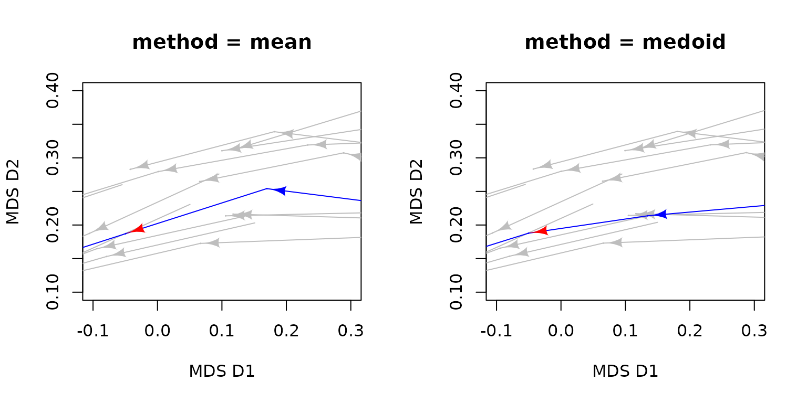
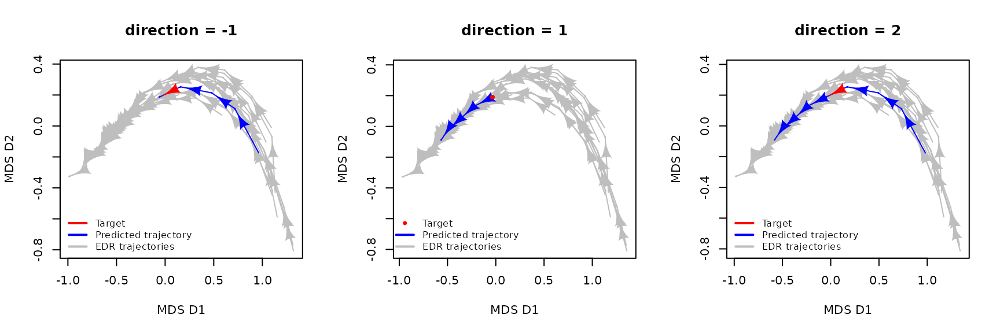
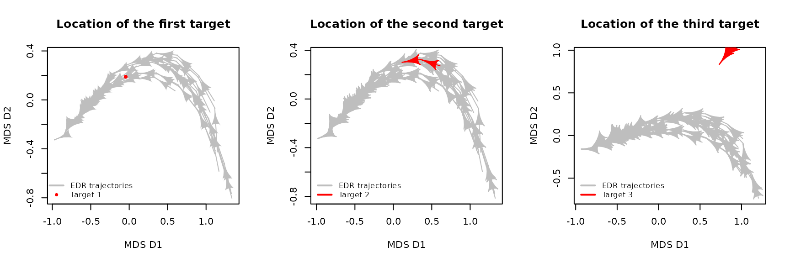

Predicting ecological trajectories from ecological dynamic regimes
Martina Sánchez-Pinillos
Source:vignettes/Predicting_trajectories.Rmd
Predicting_trajectories.Rmd1. Introduction
1.1. Predicting ecological trajectories within the EDR framework
Ecological dynamic regimes (EDRs) are defined as a group of trajectories reflecting the temporal changes in a set of state variables under certain external conditions and in the absence of perturbations. As such, EDRs provide valuable information to infer the dynamics of analogous systems (i.e., defined by the same state variables) for which we lack long temporal series.
PETRA-EDR (Predicted Ecological TRAjectories in
Ecological Dynamic Regimes; Sánchez-Pinillos et al.,
2026) is an algorithm implemented in ecoregime that
leverages ecological dynamic regimes defined in a multidimensional state
space to forecast the unknown trajectory of any ecosystem state.
PETRA-EDR is based on the rationale that the successional changes in the
state variables of ecological systems under comparable and relatively
stable external conditions follow similar patterns. PETRA-EDR does not
aim to outperform other data-driven and process-based models to forecast
ecological dynamics, but to provide the EDR framework with predictive
capacity, improving ecological resilience analyses, and enabling the
detection of dynamic regime shifts when long time series are
unavailable.
In particular, PETRA-EDR can be used to predict the dynamics of a
disturbed system if that disturbance had not occurred. That expected
undisturbed trajectory can then be used as the reference to quantify the
deviation of the disturbed trajectory through amplitude, recovery, and
net change indicators and assess the system’s ecological resilience (see
vignette("Resilience")).
Moreover, forecasting the post-disturbance dynamics of a system within a stability landscape composed of alternative EDRs can be useful to identify potential regime shifts.
PETRA-EDR is complemented by the metric MPD (Mean Predicted Deviation), which quantifies the prediction accuracy of PETRA-EDR outputs assuming that, in the absence of stochasticity and observational noise, there is one and only one ecological trajectory passing by the target.
To learn more about the technical details of PETRA-EDR and MPD, see this publication:
- Sánchez-Pinillos M., Fortin, M-J., Messier, C., Kneeshaw, D. 2026. Forecasting ecological trajectories from ecological dynamic regimes to improve resilience analysis. Methods in Ecology and Evolution. https://doi.org/10.1111/2041-210x.70372
Additional information about the analysis of ecological dynamic
regimes can be found in vignette("EDR_framework") and this
publication:
- Sánchez-Pinillos M., Kéfi, S., De Cáceres, M., Dakos, V. 2023. Ecological Dynamic Regimes: Identification, characterization, and comparison. Ecological Monographs. https://doi.org/10.1002/ecm.1589
To assess ecological resilience using EDRs, you can check
vignette("Resilience") and this publication:
- Sánchez-Pinillos M., Dakos, V., Kéfi, S. 2024. Ecological dynamic regimes: A key concept for assessing ecological resilience. Biological Conservation. https://doi.org/10.1016/j.biocon.2023.110409
1.2. About this vignette
This vignette focuses on the PETRA-EDR algorithm proposed in Sánchez-Pinillos et al.,
(2026) to predict the ecological trajectories from ecological
dynamic regimes. This algorithm was implemented in the function
petra_edr() of the R package ecoregime. In
particular, this vignette introduces the arguments and outputs of the
function petra_edr(), summarizes the workflow to predict
trajectories, quantifies the prediction accuracy through the metric MPD
implemented in MPD(), and represents predicted trajectories
in a state space using the function plot().
You can install ecoregime directly from CRAN or from my
GitHub account (development version):
install.packages("ecoregime")
devtools::install_github(repo = "MSPinillos/ecoregime", dependencies = T, build_vignettes = T)Once you have installed ecoregime you will have to load
it:
citation("ecoregime")
#> To cite 'ecoregime' in publications use:
#>
#> Sánchez-Pinillos M, Kéfi S, De Cáceres M, Dakos V (2023). "Ecological
#> dynamic regimes: Identification, characterization, and comparison."
#> _Ecological Monographs_, e1589. <https://doi.org/10.1002/ecm.1589>.
#>
#> Sánchez-Pinillos M, Dakos V, Kéfi S (2024). "Ecological dynamic
#> regimes: A key concept for assessing ecological resilience."
#> _Biological Conservation_, 110409.
#> <https://doi.org/10.1016/j.biocon.2023.110409>.
#>
#> Sánchez-Pinillos M, Fortin M, Messier C, Kneeshaw D (2026).
#> "Forecasting ecological trajectories from ecological dynamic regimes
#> to improve resilience analysis." _Methods in Ecology and Evolution_.
#> <https://doi.org/10.1111/2041-210x.70372>.
#>
#> Sánchez-Pinillos M (2023). _ecoregime: Analysis of Ecological Dynamic
#> Regimes_. <https://doi.org/10.5281/zenodo.7584943>.
#>
#> To see these entries in BibTeX format, use 'print(<citation>,
#> bibtex=TRUE)', 'toBibtex(.)', or set
#> 'options(citation.bibtex.max=999)'.2. Artificial data
First, we will generate three hypothetical targets from the EDR data
included in ecoregime. We will use them along the vignette
to predict their trajectories using EDR1 as the reference.
Although the data included in ecoregime refer to
ecological communities and species abundances, it is important to note
that other ecological units (e.g., individuals, populations) and state
variables (e.g., number of individuals, functional traits) can be used.
Some examples are detailed in the Supporting Information (Appendix S1)
of the associated paper (Sánchez-Pinillos et al.,
2026)
# Matrix including the state variables (sp1-sp12) of the EDR trajectories
edr <- EDR_data$EDR1$abundance
# The first target is composed of one state resulting from averaging the state
# variables of two states in the reference EDR
target1 <- data.frame(matrix(colMeans(edr[traj == 3 & state %in% 1:2, paste0('sp', 1:12)]),
ncol = 12,
dimnames = list(1, paste0('sp', 1:12))))
target1$traj <- 'target1'
target1$state <- 1
# The second target is composed of three states resulting from averaging the
# state variables of four states in the reference EDR
target2 <- data.frame(t(sapply(1:3, function(istate){
matrix(colMeans(edr[traj == 6 & state %in% istate:(istate+1),
paste0('sp', 1:12)]))
})))
names(target2) <- paste0('sp', 1:12)
target2$traj <- 'target2'
target2$state <- 1:3
# For the third target, we will consider a trajectory of a different EDR
target3 <- EDR_data$EDR2$abundance[1:5, 3:ncol(EDR_data$EDR2$abundance)]
target3$traj <- 'target3'3. Understanding petra_edr()
3.1. The arguments of petra_edr()
We can classify the arguments of petra_edr() into four
main groups:
Arguments to define the state variables and identify trajectories and states: state_var, trajectories, states, targets
Arguments to define the state space: d_function, d_args, d
Parameters of PETRA-EDR: k, eps, minPts, w_function, alpha, w, method, direction
Arguments to define the contents of the output: return_args
Let’s use the first target defined in the previous section as an
example to better understand the arguments of
petra_edr().
-
Arguments to define the state variables and identify EDR trajectories, states, and targets:
-
state_var: the state variables of each EDR and target state. In our example,state_varis adata.frameincluding the species abundances for all states in the EDR and the target:
-
# Select the columns containing the state variables (sp1, ..., sp12) and
# include the information of EDR and target states in the same data.frame
state_var1 <- data.frame(rbind(edr[, paste0("sp", 1:12)],
target1[, paste0("sp", 1:12)]))
head(state_var1)
#> sp1 sp2 sp3 sp4 sp5 sp6 sp7 sp8 sp9 sp10 sp11 sp12
#> 1 61 4 4 4 4 3 4 3 4 4 2 3
#> 2 66 4 4 4 3 2 3 3 4 4 2 3
#> 3 69 3 3 3 3 2 3 2 3 3 2 2
#> 4 73 3 3 3 2 2 3 2 3 3 2 2
#> 5 76 2 3 2 2 2 2 2 2 2 2 2
#> 6 2 16 29 24 4 1 5 1 6 11 0 2-
trajectories: the ID of all trajectories or sites, including both the EDR trajectories and the targets.
-
states: the ID of all states or surveys, including both the EDR states and the target states.
states1 <- as.integer(c(edr$state, target1$state))
head(states1)
#> [1] 1 2 3 4 5 1targets: the ID of the targets for which we want to predict their dynamics. In our example,"target1".-
Arguments to define the state space: In the EDR framework, the state space is defined by a dissimilarity matrix.
petra_edr()needs to recalculate the state space as it advances predicting new states. As a consequence, we need to indicate the function used to define the state space and a list of arguments to apply the dissimilarity function:d_function: name of the function used to compute the state dissimilarity matrix in the form"package::function"(e.g.,"vegan::vegdist"). It is important to consider a function returning an object of classdist.d_args: a list of arguments needed to applyd_function. This list depends ond_function, for example, in the functionvegdistinvegan, the minimum argument that we need to specify isx(i.e., the community data matrix, which in our case isstate_var). If we want to modify the other arguments of the function, we will have to include it ind_args. For example, to apply the Bray-Curtis dissimilarity, we need to include de argumentmethodind_args. Thus, in this example, we would defined_args = list(x = state_var, method = 'bray').d: we can include a matrix containing the dissimilarities between each pair of states in the EDR and targets in the same order than the specified intrajectoriesandstates. In our example,dcan be calculated by applyingd_functiontostate_var. Ifdis not specified,petra_edr()will compute it using the argumentsd_functionandd_args.
# Compute state dissimilarities from state_var
dStates1 <- vegan::vegdist(x = state_var1, method = "bray")-
Parameters of PETRA-EDR: These parameters are specific of the PETRA-EDR algorithm. You can find useful information in Sánchez-Pinillos et al., (2026) and its Supporting Information (Appendix S1).
-
k: number of the nearest states to the target. Small values ofkreturns forecasts highly dependent on the nearest trajectories, whereas large values consider the trends of many trajectories in the EDR. Let’s see the differences of applyingpetra_edr()in our example whenk = 2Landk = 20L:
-
# Compute petra_edr using a small k
petra_k1 <- petra_edr(state_var = state_var1,
trajectories = trajectories1,
states = states1,
targets = "target1",
d_function = "vegan::vegdist",
d_args = list(x = state_var1, method = "bray"),
k = 2L,
minPts = 2L,
return_args = T)
# Compute petra_edr using a large k
petra_k2 <- petra_edr(state_var = state_var1,
trajectories = trajectories1,
states = states1,
targets = "target1",
d_function = "vegan::vegdist",
d_args = list(x = state_var1, method = "bray"),
k = 20L,
minPts = 2L,
return_args = T)
# Use plot to see the results
par(mfrow = c(1, 2))
plot(x = petra_k1,
target.colors = "red",
petra.colors = "blue",
xlab = "MDS D1",
ylab = "MDS D2",
main = "k = 2")
legend("bottomleft",
c("Target", "Predicted trajectory", "EDR trajectories"),
lwd = 2,
col = c("red", "blue", "grey"),
cex = 0.8,
bty = "n")
plot(x = petra_k2,
target.colors = "red",
petra.colors = "blue",
xlab = "MDS D1",
ylab = "MDS D2",
main = "k = 20")
legend("bottomleft",
c("Target", "Predicted trajectory", "EDR trajectories"),
lwd = 2,
col = c("red", "blue", "grey"),
cex = 0.8,
bty = "n")
When k = 2L, petra_edr() selects two states
that are very close to the target:
petra_k1$k_dist
#> target target_state k_trajectories k_states k_dist
#> <char> <int> <char> <int> <num>
#> 1: target1 1 9 2 0.025
#> 2: target1 1 16 2 0.025In contrast, when k = 20L, petra_edr()
selects 20 states being the furthest state at a dissimilarity larger
than 0.07:
tail(petra_k2$k_dist)
#> target target_state k_trajectories k_states k_dist
#> <char> <int> <char> <int> <num>
#> 1: target1 1 6 5 0.06965174
#> 2: target1 1 9 1 0.06965174
#> 3: target1 1 15 1 0.06965174
#> 4: target1 1 20 1 0.06965174
#> 5: target1 1 10 1 0.07425743
#> 6: target1 1 12 2 0.07425743While setting k=20L returns a longer trajectory, the
predicted trajectory has a greater uncertainty, since it can be biased
by the furthest states.
-
eps: dissimilarity threshold beyond which EDR states are disregarded in the computation of the predicted trajectories. This argument can be used to avoid biased outputs due to far states.
# Compute petra_edr using a small eps
petra_eps1 <- petra_edr(state_var = state_var1,
trajectories = trajectories1,
states = states1,
targets = "target1",
d_function = "vegan::vegdist",
d_args = list(x = state_var1, method = "bray"),
k = 20L,
minPts = 2L,
eps = 0.03,
return_args = T)
# Compute petra_edr using a large eps
petra_eps2 <- petra_edr(state_var = state_var1,
trajectories = trajectories1,
states = states1,
targets = "target1",
d_function = "vegan::vegdist",
d_args = list(x = state_var1, method = "bray"),
k = 20L,
minPts = 2L,
eps = 0.1,
return_args = T)
# Plot PETRA outputs
par(mfrow = c(1, 2))
plot(x = petra_eps1,
target.colors = "red",
petra.colors = "blue",
xlab = "MDS D1",
ylab = "MDS D2",
main = "eps = 0.03")
legend("bottomleft",
c("Target", "Predicted trajectory", "EDR trajectories"),
lwd = 2,
col = c("red", "blue", "grey"),
cex = 0.8,
bty = "n")
plot(x = petra_eps2,
target.colors = "red",
petra.colors = "blue",
xlab = "MDS D1",
ylab = "MDS D2",
main = "eps = 0.1")
legend("bottomleft",
c("Target", "Predicted trajectory", "EDR trajectories"),
lwd = 2,
col = c("red", "blue", "grey"),
cex = 0.8,
bty = "n")
Even if we specify k = 20L, we can restrict the number
of selected states to those within a radius eps from the
target states. For example, when we set eps = 0.03, only
three out of the 20 states are used in the analyses:
petra_eps1$k_dist
#> target target_state k_trajectories k_states k_dist
#> <char> <int> <char> <int> <num>
#> 1: target1 1 9 2 0.02500000
#> 2: target1 1 16 2 0.02500000
#> 3: target1 1 10 2 0.02985075-
minPts: minimum number of states required to calculate the predicted states. In general, smaller values ofminPtslead to longer predicted trajectories. However, the states calculated from a small number of states could be associated with a higher uncertainty.
# Compute petra_edr using a small minPts
petra_minPts1 <- petra_edr(state_var = state_var1,
trajectories = trajectories1,
states = states1,
targets = "target1",
d_function = "vegan::vegdist",
d_args = list(x = state_var1, method = "bray"),
k = 6L,
minPts = 2L,
return_args = T)
# Compute petra_edr using a large minPts
petra_minPts2 <- petra_edr(state_var = state_var1,
trajectories = trajectories1,
states = states1,
targets = "target1",
d_function = "vegan::vegdist",
d_args = list(x = state_var1, method = "bray"),
k = 6L,
minPts = 6L,
return_args = T)
# Plot PETRA outputs
par(mfrow = c(1, 2))
plot(x = petra_minPts1,
target.colors = "red",
petra.colors = "blue",
xlab = "MDS D1",
ylab = "MDS D2",
main = "minPts = 2")
legend("bottomleft",
c("Target", "Predicted trajectory", "EDR trajectories"),
lwd = 2,
col = c("red", "blue", "grey"),
cex = 0.8,
bty = "n")
plot(x = petra_minPts2,
target.colors = "red",
petra.colors = "blue",
xlab = "MDS D1",
ylab = "MDS D2",
main = "minPts = 10")
legend("bottomleft",
c("Target", "Predicted trajectory", "EDR trajectories"),
lwd = c(NA, 2, 2),
pch = c(20, NA, NA),
col = c("red", "blue", "grey"),
cex = 0.8,
bty = "n")
When we set minPts = 2L, petra_edr()
returns five predicted states, two of them calculated from four and two
EDR states, respectively. In contrast, by setting
minPts = 6L, we ensured that all predicted states are
calculated from six or more EDR states, indicating a higher probability
of finding those state variables in nature:
petra_minPts1$predicted_dist[, c("target", "predicted_state", "N")]
#> target predicted_state N
#> <char> <num> <int>
#> 1: target1 0 4
#> 2: target1 2 6
#> 3: target1 3 6
#> 4: target1 4 6
#> 5: target1 5 2
petra_minPts2$predicted_dist[, c("target", "predicted_state", "N")]
#> target predicted_state N
#> <char> <num> <int>
#> 1: target1 2 6
#> 2: target1 3 6
#> 3: target1 4 6-
w_function: instead of using the argumenteps, we can assign different weights as a function of the dissimilarity of the target to the EDR states to improve the results.petra_edr()permits using six different weighting functions:"linear","power","exponential","Gaussian","hyperbolic", or"spherical". You can see the relevance of this argument in Sánchez-Pinillos et al., (2026). -
alpha: whenw_functionis one of"power","exponential", or"hyperbolic",alphais the parameter modulating the shape of these functions. -
w: it is possible to assign different weights using some values pre-defined by the user. For example, one could be interested in definingwdepending on some external variables. -
method: it indicates how the predicted states are calculated.
# Compute petra_edr using method = "mean"
petra_method1 <- petra_edr(state_var = state_var1,
trajectories = trajectories1,
states = states1,
targets = "target1",
d_function = "vegan::vegdist",
d_args = list(x = state_var1, method = "bray"),
k = 20L,
minPts = 2L,
method = "mean",
return_args = T)
# Compute petra_edr using method = "medoid"
petra_method2 <- petra_edr(state_var = state_var1,
trajectories = trajectories1,
states = states1,
targets = "target1",
d_function = "vegan::vegdist",
d_args = list(x = state_var1, method = "bray"),
k = 20L,
minPts = 2L,
method = "medoid",
return_args = T)If method = "mean", the predicted states are calculated
averaging the state variables of the EDR states. If
method = "medoid", the predicted states coincide with the
medoids of the EDR states. We can zoom in one of the predicted states to
see the differences between both methods:
par(mfrow = c(1, 2))
plot(petra_method1,
target.colors = "red",
petra.colors = "blue",
xlim = c(-0.1, 0.3),
ylim = c(0.1, 0.4),
xlab = "MDS D1",
ylab = "MDS D2",
main = "method = mean")
plot(petra_method2,
target.colors = "red",
petra.colors = "blue",
xlim = c(-0.1, 0.3),
ylim = c(0.1, 0.4),
xlab = "MDS D1",
ylab = "MDS D2",
main = "method = medoid")
-
direction: we can specify whether we want to predict the dynamics before and/or after the target.
# Compute petra_edr before the target
petra_direction1 <- petra_edr(state_var = state_var1,
trajectories = trajectories1,
states = states1,
targets = "target1",
d_function = "vegan::vegdist",
d_args = list(x = state_var1, method="bray"),
k = 20L,
minPts = 2L,
direction = -1,
return_args = T)
# Compute petra_edr after the target
petra_direction2 <- petra_edr(state_var = state_var1,
trajectories = trajectories1,
states = states1,
targets = "target1",
d_function = "vegan::vegdist",
d_args = list(x = state_var1, method="bray"),
k = 20L,
minPts = 2L,
direction = 1,
return_args = T)
# Compute petra_edr before and after the target
petra_direction3 <- petra_edr(state_var = state_var1,
trajectories = trajectories1,
states = states1,
targets = "target1",
d_function = "vegan::vegdist",
d_args = list(x = state_var1, method="bray"),
k = 20L,
minPts = 2L,
direction = 2,
return_args = T)
# Plot PETRA outputs
par(mfrow = c(1, 3))
plot(x = petra_direction1,
target.colors = "red",
petra.colors = "blue",
xlab = "MDS D1",
ylab = "MDS D2",
main = "direction = -1")
legend("bottomleft",
c("Target", "Predicted trajectory", "EDR trajectories"),
lwd = 2,
col = c("red", "blue", "grey"),
cex = 0.8,
bty = "n")
plot(x = petra_direction2,
target.colors = "red",
petra.colors = "blue",
xlab = "MDS D1",
ylab = "MDS D2",
main = "direction = 1")
legend("bottomleft",
c("Target", "Predicted trajectory", "EDR trajectories"),
lwd = c(NA, 2, 2),
pch = c(20, NA, NA),
col = c("red", "blue", "grey"),
cex = 0.8,
bty = "n")
plot(x = petra_direction3,
target.colors = "red",
petra.colors = "blue",
xlab = "MDS D1",
ylab = "MDS D2",
main = "direction = 2")
legend("bottomleft",
c("Target", "Predicted trajectory", "EDR trajectories"),
lwd = 2,
col = c("red", "blue", "grey"),
cex = 0.8,
bty = "n")
-
Argument to define the contents of the output
-
return_args: ifTRUE, the output contains the information included in the arguments ofpetra_edr(). This is essential for computing other functions, likeplot()orMPD().
-
3.2. The outputs of petra_edr()
petra_edr() returns a list of elements including the
state variables of the predicted trajectory and some statistics
associated with the targets and the predicted states.
-
state_var: element of the same class than the argumentstate_varincluding the state variables for all states in the predicted trajectory.
petra_k2$state_var
#> sp1 sp2 sp3 sp4 sp5 sp6 sp7 sp8
#> 1 6.00000 17.000000 20.800000 16.200000 4.400000 1.600000 6.200000 2.200000
#> 2 12.00000 13.428571 14.857143 13.000000 5.857143 2.285714 7.857143 3.428571
#> 3 19.00000 11.125000 11.750000 10.750000 6.000000 2.875000 7.750000 4.125000
#> 4 29.46154 8.692308 9.153846 8.615385 5.846154 3.307692 7.153846 4.615385
#> 5 38.00000 7.500000 7.500000 7.500000 5.500000 3.000000 6.500000 4.500000
#> 6 44.33333 6.333333 6.466667 6.266667 4.866667 3.066667 5.466667 4.066667
#> 7 50.46154 5.538462 5.615385 5.538462 4.153846 2.846154 4.846154 3.769231
#> 8 56.08333 4.833333 4.833333 4.833333 4.000000 2.666667 4.333333 3.416667
#> 9 59.71429 4.428571 4.428571 4.428571 4.000000 2.285714 4.000000 3.142857
#> sp9 sp10 sp11 sp12
#> 1 8.200000 13.200000 1.200000 2.600000
#> 2 9.428571 12.142857 2.142857 4.000000
#> 3 8.750000 10.625000 2.250000 4.375000
#> 4 7.461538 8.461538 2.923077 4.461538
#> 5 6.500000 7.500000 3.000000 4.000000
#> 6 5.733333 6.200000 2.866667 3.800000
#> 7 5.307692 5.461538 2.692308 3.615385
#> 8 4.416667 4.750000 2.500000 3.500000
#> 9 4.000000 4.428571 2.285714 3.142857-
trajectoriesandstates: these elements are useful to identify the trajectory and state ID of the predicted trajectory instate_var.
In our example, as we only used one target, trajectories
indicate that all rows in state_var refer to target1. This
output is, however, useful when we include several targets in
petra_edr() as we will see later.
petra_k2$trajectories
#> [1] "target1" "target1" "target1" "target1" "target1" "target1" "target1"
#> [8] "target1" "target1"states shows the order of the predicted states. In this
case, target1 contains only one state, which is identified by
1. The states -3:0 and 2:5
correspond to the predicted states preceding and following the target,
respectively.
petra_k2$states
#> [1] -3 -2 -1 0 1 2 3 4 5trajectories and states serve to identify
the states in state_var:
state_var1_k2 <- petra_k2$state_var
state_var1_k2$traj <- petra_k2$trajectories
state_var1_k2$state <- petra_k2$states
state_var1_k2[, c("traj", "state", paste0("sp", 1:12))]
#> traj state sp1 sp2 sp3 sp4 sp5 sp6
#> 1 target1 -3 6.00000 17.000000 20.800000 16.200000 4.400000 1.600000
#> 2 target1 -2 12.00000 13.428571 14.857143 13.000000 5.857143 2.285714
#> 3 target1 -1 19.00000 11.125000 11.750000 10.750000 6.000000 2.875000
#> 4 target1 0 29.46154 8.692308 9.153846 8.615385 5.846154 3.307692
#> 5 target1 1 38.00000 7.500000 7.500000 7.500000 5.500000 3.000000
#> 6 target1 2 44.33333 6.333333 6.466667 6.266667 4.866667 3.066667
#> 7 target1 3 50.46154 5.538462 5.615385 5.538462 4.153846 2.846154
#> 8 target1 4 56.08333 4.833333 4.833333 4.833333 4.000000 2.666667
#> 9 target1 5 59.71429 4.428571 4.428571 4.428571 4.000000 2.285714
#> sp7 sp8 sp9 sp10 sp11 sp12
#> 1 6.200000 2.200000 8.200000 13.200000 1.200000 2.600000
#> 2 7.857143 3.428571 9.428571 12.142857 2.142857 4.000000
#> 3 7.750000 4.125000 8.750000 10.625000 2.250000 4.375000
#> 4 7.153846 4.615385 7.461538 8.461538 2.923077 4.461538
#> 5 6.500000 4.500000 6.500000 7.500000 3.000000 4.000000
#> 6 5.466667 4.066667 5.733333 6.200000 2.866667 3.800000
#> 7 4.846154 3.769231 5.307692 5.461538 2.692308 3.615385
#> 8 4.333333 3.416667 4.416667 4.750000 2.500000 3.500000
#> 9 4.000000 3.142857 4.000000 4.428571 2.285714 3.142857-
k_dist: data.table containing the ID and dissimilarity of the k-nearest states in the EDR to each extreme of the target.
For example, when we set k = 20L and
eps = 0.03, petra_edr selected three EDR
states: the state 2 of trajectory 9, the state 2 of trajectory 16, and
the state 2 of trajectory 10. k_dist also includes the
dissimilarity between the target states and each of the k-nearest EDR
states.
petra_eps1$k_dist
#> target target_state k_trajectories k_states k_dist
#> <char> <int> <char> <int> <num>
#> 1: target1 1 9 2 0.02500000
#> 2: target1 1 16 2 0.02500000
#> 3: target1 1 10 2 0.02985075-
predicted_dist: data table including some statistics associated with each of the predicted states.
Following the previous example (k = 2L and
eps = 0.03), the predicted trajectory for target1 contains
four predicted states (0, 2, 3, 4). N includes the number
of EDR states used to calculate the state variables of each predicted
state (3 in all predicted states); mean_dist,
sd_dist, min_dist, and max_dist
respectively include the mean, standard deviation, minimum, and maximum
dissimilarities between the predicted state and the EDR states used to
calculate their state variables.
The states used to calculate the state variables of the predicted
state 0 are, in average further than those used for the other predicted
states, showing the highest values in all statistics and, therefore,
indicating a greater uncertainty in its prediction. Note that these
statistics depend on the dissimilarity metric used to define the state
space (i.e., d_function) and, therefore, the uncertainty of
the predicted state must be interpreted accordingly.
petra_eps1$predicted_dist
#> target predicted_state N mean_dist sd_dist min_dist
#> <char> <num> <int> <num> <num> <num>
#> 1: target1 0 3 0.013344695 0.004472980 0.010000000
#> 2: target1 2 3 0.004497023 0.001917714 0.003389831
#> 3: target1 3 3 0.010943775 0.003496851 0.008183306
#> 4: target1 4 3 0.006644555 0.001664003 0.004991681
#> max_dist
#> <num>
#> 1: 0.018425461
#> 2: 0.006711409
#> 3: 0.014876033
#> 4: 0.0083194684. Forecasting ecological trajectories
4.1. Preliminary analyses
Before applying petra_edr() to predict the ecological
trajectories of our three targets, it is useful to carry out some
preliminary analyses that will inform us about the adequacy of our data
to apply PETRA-EDR.
The function plot_edr() can be useful for evaluating the
position of the targets relative to the EDR. For that, we first need to
define the state space using a dissimilarity matrix including all EDR
trajectories and targets. In our example, we will use the Bray-Curtis
dissimilarity, but other metric can be more adequate depending on your
data.
# State variables and dissimilarity metric of the EDR and the first target
state_var1 <- rbind(edr[, paste0("sp", 1:12)],
target1[, paste0("sp", 1:12)])
dStates1 <- vegan::vegdist(state_var1, method = "bray")
# State variables and dissimilarity metric of the EDR and the second target
state_var2 <- rbind(edr[, paste0("sp", 1:12)],
target2[, paste0("sp", 1:12)])
dStates2 <- vegan::vegdist(state_var2, method = "bray")
# State variables and dissimilarity metric of the EDR and the third target
state_var3 <- rbind(edr[, paste0("sp", 1:12)],
target3[, paste0("sp", 1:12)])
dStates3 <- vegan::vegdist(state_var3, method = "bray")Now we can use the function plot_edr() to visualize the
position of each target in the EDR:
par(mfrow = c(1, 3))
# Number of trajectories in the EDR
Ntraj <- length(unique(edr$traj))
# Location of target1.
# As target1 is composed of one state, we need to specify type = 'states'
plot_edr(x = dStates1,
trajectories = c(edr$traj, target1$traj),
states = as.integer(c(edr$state, target1$state)),
type = "states",
state.colors = c(rep("grey", length(edr$traj)), "red"),
xlab = "MDS D1",
ylab = "MDS D2",
main = "Location of the first target")
#> Trajectories will be displayed in an ordination space generated through multidimensional scaling (MDS). You can avoid this step by providing state coordinates in 'x'.
legend("bottomleft",
c("EDR trajectories", "Target 1"),
lwd = c(2, NA),
pch = c(NA, 20),
col = c("grey", "red"),
cex = 0.8,
bty = "n")
# Location of target2
plot_edr(x = dStates2,
trajectories = c(edr$traj, target2$traj),
states = as.integer(c(edr$state, target2$state)),
traj.colors = c(rep("grey", Ntraj), "red"),
xlab = "MDS D1",
ylab = "MDS D2",
main = "Location of the second target")
#> Trajectories will be displayed in an ordination space generated through multidimensional scaling (MDS). You can avoid this step by providing state coordinates in 'x'.
legend("bottomleft",
c("EDR trajectories", "Target 2"),
lwd = 2,
col = c("grey", "red"),
cex = 0.8,
bty = "n")
# Location of target3
plot_edr(x = dStates3,
trajectories = c(edr$traj, target3$traj),
states = as.integer(c(edr$state, target3$state)),
traj.colors = c(rep("grey", Ntraj), "red"),
xlab = "MDS D1",
ylab = "MDS D2",
main = "Location of the third target")
#> Trajectories will be displayed in an ordination space generated through multidimensional scaling (MDS). You can avoid this step by providing state coordinates in 'x'.
legend("bottomleft",
c("EDR trajectories", "Target 3"),
lwd = 2,
col = c("grey", "red"),
cex = 0.8,
bty = "n")
Whereas the first and second targets are within the boundaries of the EDR, the third target is far from the EDR trajectories. This indicates that the forecast of the third target will not be accurate.
We can get similar conclusions by computing the dynamic dispersion (dDis) of each target relative to the EDR trajectories:
# We cannnot compute dDis for the first target because it is composed of a single state. We will calculate an equivalent metric by calculating the average dissimilarity between the target and the EDR states.
dDis1 <- mean(as.matrix(dStates1)[-nrow(state_var1), nrow(state_var1)])
names(dDis1) <- "dDis (ref. target1)"
# For targets 2 and 3, we use the function dDis
dDis2 <- dDis(d = dStates2,
d.type = 'dStates',
trajectories = c(edr$traj, target2$traj),
states = c(edr$state, target2$state),
reference = 'target2')
dDis3 <- dDis(d = dStates3,
d.type = 'dStates',
trajectories = c(edr$traj, target3$traj),
states = c(edr$state, target3$state),
reference = 'target3')
dDis1; dDis2; dDis3
#> dDis (ref. target1)
#> 0.2320993
#> dDis (ref. target2)
#> 0.2228589
#> dDis (ref. target3)
#> 0.6158395DISCLAIMER: to predict the trajectories of target3, we should either use a different EDR as the reference or discard the analyses for the inadequacy of the data. However, we will perform the analyses so we can compare the results.
4.2. Forecasting ecological trajectories of multiple targets using different conditions
We can predict the ecological trajectories of multiple targets using a common EDR.
For that, state_var must include the state variables of
the reference EDR and the targets:
# data.table including the state variables, trajectories, and states of the EDR and the targets
data <- rbind(edr[, -1], target1, target2, target3)
# state_var needs to be a data.frame with only the state variables
state_var <- data.frame(data[, paste0("sp", 1:12)])We can define different conditions for each target:
| Target | k | eps | minPts | w_function | alpha |
|---|---|---|---|---|---|
| target1 | 10 | NA | 3 | NA | NA |
| target2 | 50 | 0.05 | 2 | exponential | 3 |
| target3 | 50 | 0.50 | 2 | linear | NA |
Some arguments (d_function, method,
direction) need to be equal for all the targets. Thus, we
will use method = "mean" and Bray-Curtis dissimilarities.
We need to set return_args = TRUE to be able to assess the
prediction quality and represent the predicted trajectories later.
petra <- petra_edr(state_var = state_var,
trajectories = data$traj,
states = as.integer(data$state),
targets = c("target1", "target2", "target3"),
d_function = "vegan::vegdist",
d_args = list(x = state_var, method = "bray"),
k = c(10L, 50L, 50L),
eps = c(NA, 0.05, 0.5),
minPts = c(3L, 2L, 2L),
w_function = c(NA, "exponential", "linear"),
alpha = c(NA, 3, NA),
direction = 2,
method = "mean",
return_args = T)4.3. Evaluating the predicted trajectories
The k-nearest EDR states
The predicted trajectory of target1 was calculated from the 10 nearest states in the EDR trajectories, which were located at a dissimilarity that ranged between 0.025 and 0.054.
petra$k_dist[target == "target1"]
#> target target_state k_trajectories k_states k_dist
#> <char> <int> <char> <int> <num>
#> 1: target1 1 9 2 0.02500000
#> 2: target1 1 16 2 0.02500000
#> 3: target1 1 10 2 0.02985075
#> 4: target1 1 3 1 0.03960396
#> 5: target1 1 3 2 0.03960396
#> 6: target1 1 12 1 0.04000000
#> 7: target1 1 5 5 0.04455446
#> 8: target1 1 19 4 0.04522613
#> 9: target1 1 6 4 0.05000000
#> 10: target1 1 30 5 0.05445545For target2, although we considered the 50 nearest states, the algorithm restricted the analyses to the 17 states that were closer than 0.05
petra$k_dist[target == "target2"]
#> target target_state k_trajectories k_states k_dist
#> <char> <int> <char> <int> <num>
#> 1: target2 1 27 3 0.02743142
#> 2: target2 1 13 4 0.03241895
#> 3: target2 1 30 3 0.03258145
#> 4: target2 1 2 4 0.03759398
#> 5: target2 1 7 3 0.04218362
#> 6: target2 1 8 5 0.04738155
#> 7: target2 1 22 5 0.04761905
#> 8: target2 1 18 5 0.04785894
#> 9: target2 3 27 5 0.01990050
#> 10: target2 3 7 5 0.02010050
#> 11: target2 3 5 4 0.02985075
#> 12: target2 3 30 5 0.02985075
#> 13: target2 3 16 1 0.03015075
#> 14: target2 3 6 3 0.04477612
#> 15: target2 3 6 4 0.04522613
#> 16: target2 3 3 1 0.04975124
#> 17: target2 3 21 5 0.04975124In the case of target3, despite being less
restrictive (eps = 0.5), the analyses were conducted from
only nine states, with dissimilarities ranging between 0.467 and 0.495.
The large dissimilarities of the k-nearest states indicates that the
predicted trajectory of target3 is not very accurate.
petra$k_dist[target == "target3"]
#> target target_state k_trajectories k_states k_dist
#> <char> <int> <char> <int> <num>
#> 1: target3 1 7 2 0.4673367
#> 2: target3 1 7 3 0.4800000
#> 3: target3 1 2 3 0.4822335
#> 4: target3 1 7 1 0.4923858
#> 5: target3 1 2 4 0.4949495
#> 6: target3 5 7 2 0.4825871
#> 7: target3 5 7 3 0.4851485
#> 8: target3 5 2 3 0.4874372
#> 9: target3 5 7 1 0.4874372The predicted states
The predicted trajectory of target1 contains six predicted states calculated from a minimum number of four states in the EDR trajectories, with mean dissimilarities ranging between 0.025 and 0.048 and standard deviations between 0.007 and 0.019.
petra$predicted_dist[target == "target1"]
#> target predicted_state N mean_dist sd_dist min_dist max_dist
#> <char> <num> <int> <num> <num> <num> <num>
#> 1: target1 -2 4 0.04778935 0.012529357 0.03841388 0.06600249
#> 2: target1 -1 4 0.04089056 0.018525464 0.02408112 0.06649937
#> 3: target1 0 8 0.04071181 0.012973255 0.02506266 0.05955335
#> 4: target1 2 8 0.02757323 0.010204108 0.01189731 0.03925234
#> 5: target1 3 6 0.02546259 0.006577310 0.01893004 0.03258145
#> 6: target1 4 6 0.02507751 0.009982484 0.01584654 0.03979678The predicted trajectory of target2 has eight predicted states calculated from a minimum number of two states in the EDR trajectories, with mean dissimilarities ranging between 0.007 and 0.059 and standard deviations between 0.002 and 0.017. Although the mean dissimilarity of the EDR states to the predicted state -2 is relatively high (0.059), using the exponential weighting function can significantly reduce potential biases due to the furthest states.
petra$predicted_dist[target == "target2"]
#> target predicted_state N mean_dist sd_dist min_dist
#> <char> <num> <int> <num> <num> <num>
#> 1: target2 -3 3 0.021417400 0.016880547 0.008956924
#> 2: target2 -2 5 0.059378498 0.010116993 0.047302221
#> 3: target2 -1 8 0.039925529 0.011378071 0.021507095
#> 4: target2 0 8 0.036909421 0.012814445 0.013553419
#> 5: target2 4 5 0.035204778 0.011506261 0.020607591
#> 6: target2 5 3 0.031531182 0.021029516 0.011709992
#> 7: target2 6 2 0.007462732 0.001548780 0.006367579
#> 8: target2 7 2 0.017767502 0.003935183 0.014984908
#> max_dist
#> <num>
#> 1: 0.040628595
#> 2: 0.069984385
#> 3: 0.055072834
#> 4: 0.058602039
#> 5: 0.047977328
#> 6: 0.053590064
#> 7: 0.008557885
#> 8: 0.020550097Despite the large dissimilarities of the k-nearest EDR states to the
target3, the mean dissimilarities of the predicted
states to the states of the EDR trajectories are much smaller. Although
the results in predicted_dist are useful to compare the
uncertainty of the predicted states in the surroundings of the EDR
trajectories, additional analyses are required to assess the accuracy of
the predicted trajectory regarding the target states.
petra$predicted_dist[target == "target3"]
#> target predicted_state N mean_dist sd_dist min_dist max_dist
#> <char> <num> <int> <num> <num> <num> <num>
#> 1: target3 -1 3 0.06577330 0.0322105990 0.041704478 0.10236461
#> 2: target3 0 4 0.06565755 0.0095374436 0.057575544 0.07804533
#> 3: target3 6 4 0.06262112 0.0499379070 0.018517517 0.11000947
#> 4: target3 7 4 0.04920758 0.0476137552 0.007995477 0.09235090
#> 5: target3 8 2 0.04314749 0.0001548725 0.043037975 0.043257005. Prediction accuracy
To assess the accuracy of the predicted trajectories, we can use the
MPD metric, which quantifies the average dissimilarity between the
target states and new forecasts generated from the predicted states.
Thus, MPD is expressed in the same units than the dissimilarity metric
set in d_function.
In contrast to the predicted trajectories for target1 and target2, the large MPD value for target3 confirms the inaccuracy of the predicted trajectory.
MPD(x = petra)
#> target1 target2 target3
#> 0.02950999 0.06125703 0.48032586Besides informing about the prediction accuracy, it is important to
note that MPD can be used in optimization techniques to improve our
results by adjusting the values of k, eps,
minPt, and alpha (if necessary). You can see
more details in Sánchez-Pinillos et al.,
(2026).
6. Representing predicted trajectories
Finally, we can represent the targets, their predicted trajectories, and the EDR trajectories used to compute PETRA-EDR in a common multidimensional state space.
plot(x = petra,
xlab = "MDS D1",
ylab = "MDS D2")
legend("bottomleft",
c("Predicted trajectories", "EDR trajectories"),
lwd = 2,
col = c("red", "grey"),
cex = 0.8,
bty = "n")
The function plot() includes multiple arguments that can
be set depending on the elements to be highlighted.
We can represent each predicted trajectory with a different color:
plot(x = petra,
petra.colors = grDevices::palette.colors(6, "Paired")[c(2, 4, 6)],
xlab = "MDS D1",
ylab = "MDS D2")
legend("topleft",
c("Predicted trajectory 1", "Predicted trajectory 2",
"Predicted trajectory 3", "EDR trajectories"),
lwd = 2,
col = c(grDevices::palette.colors(6, "Paired")[c(2, 4, 6)], "grey"),
cex = 0.8,
bty = "n")
We can also define different colors for the observed states (i.e., target states) and the predicted states. For example, we could use darker colors for the observed states:
plot(x = petra,
traj.colors = grDevices::palette.colors(9, "Set 3")[9],
petra.colors = grDevices::palette.colors(6, "Paired")[c(1, 3, 5)],
target.colors = grDevices::palette.colors(6, "Paired")[c(2, 4, 6)],
xlab = "MDS D1",
ylab = "MDS D2")
legend("bottomleft",
c("Target 1", "Predicted trajectory 1",
"Target 2", "Predicted trajectory 2",
"Target 3", "Predicted trajectory 3",
"EDR trajectories"),
col = c(grDevices::palette.colors(6, "Paired")[c(2, 1, 4, 3, 6, 5)],
grDevices::palette.colors(9, "Paired")[9]),
lwd = 2,
ncol = 2,
cex = 0.8,
bty = "n")
Finally, we can use the results in predicted_dist and
represent the uncertainty associated with each predicted state. For
example, based on the average dissimilarity between the predicted states
and the EDR trajectories:
plot(x = petra,
petra.colors = grDevices::hcl.colors(5, "Viridis")[3],
target.colors = grDevices::hcl.colors(5, "Viridis")[1],
uncert.metric = "mean_dist",
uncert.colors = grDevices::hcl.colors(5, "Viridis"),
xlab = "MDS D1",
ylab = "MDS D2")
legend("topleft",
legend = c(paste0("mean_dist = ",
round(min(petra$predicted_dist$mean_dist), 2)),
rep(NA, 18),
paste0("mean_dist = ",
round(max(petra$predicted_dist$mean_dist), 2))),
fill = grDevices::hcl.colors(20, "Viridis"),
border = NA,
y.intersp = 0.2,
cex = 0.8,
bty = "n")